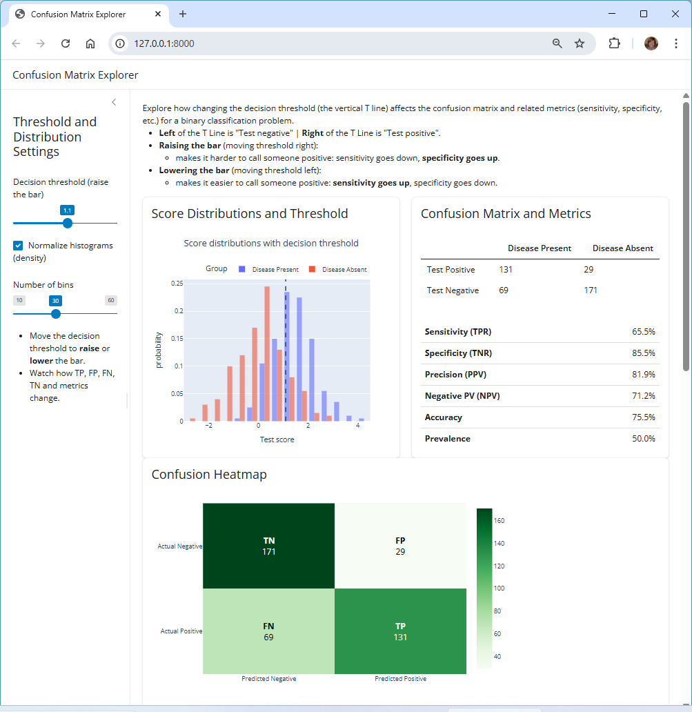
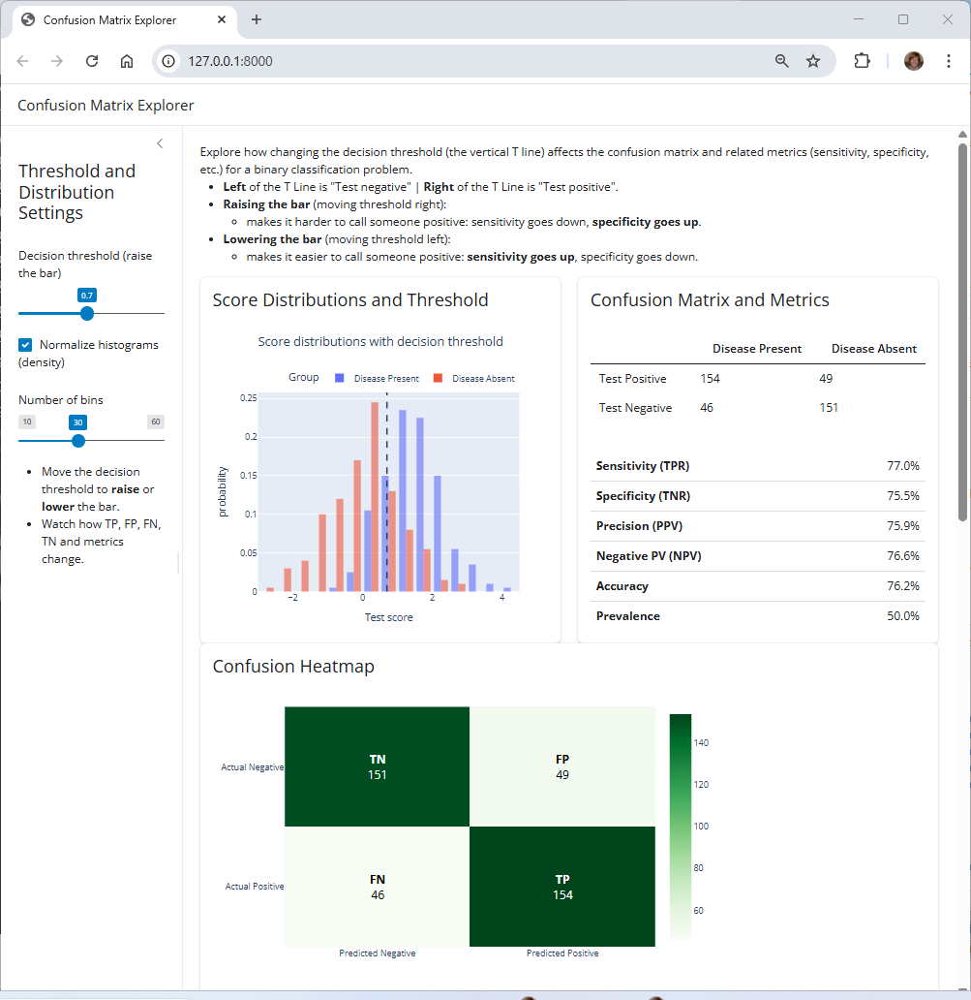
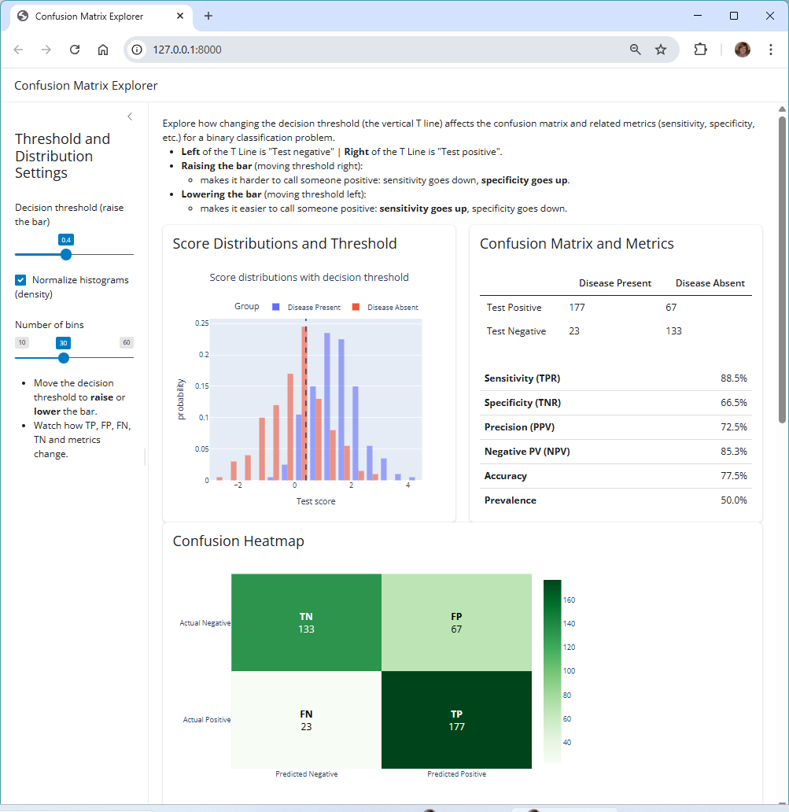

Confusion Matrix Explorer (PyShiny App)¶
This repo (
confusion-matrix-explorer) contains a PyShiny app for exploring how changing a decision threshold affects a binary classifier confusion matrix and related metrics (sensitivity, specificity, precision, etc.).
Launch the App In Your Browser¶
Click here: Launch the Confusion Matrix Explorer
The app runs in your browser using Shinylive (Pyodide), no installation needed.
About the App¶
The Confusion Matrix Explorer app demonstrates how changing the decision threshold (the vertical T line) affects the confusion matrix and related metrics (sensitivity, specificity, etc.) for a binary classification problem.
How to use:
- Use the sidebar upper slider to vary the decision threshold.
- Use the sidebar lower slider to vary the number of bins in the histogram.
- Compare the as you raise (or lower) the decision threshold.
To learn more:
- See ABOUT.md.
Optional: Run on Your Machine¶
- To run locally, follow the steps below.
- To make modifications, see DEVELOPER.md
Prerequisites: Set Up Machine¶
- View hidden files and folders
- View file extensions
- Git
- VS Code (recommended)
- uv
Fork and Clone Repository¶
- Fork the repo.
- Clone your repo to your machine and open it in VS Code.
Open a terminal and run the following commands.
git clone https://github.com/YOUR_USERNAME/confusion-matrix-explorer.git
cd confusion-matrix-explorer
One-time setup¶
- Open the repo directory in VS Code.
- Open a terminal in VS Code.
uv python pin 3.14
uv venv
.venv\Scripts\activate # Windows
# source .venv/bin/activate # Mac/Linux/WSL
uv sync --extra dev --extra docs --upgrade
uv run pre-commit install
uv run shiny run --reload src/confusion_matrix_explorer/app.py
Screenshot (Raise the Bar)¶

Screenshot (Default)¶

Screenshot (Lower the Bar)¶
